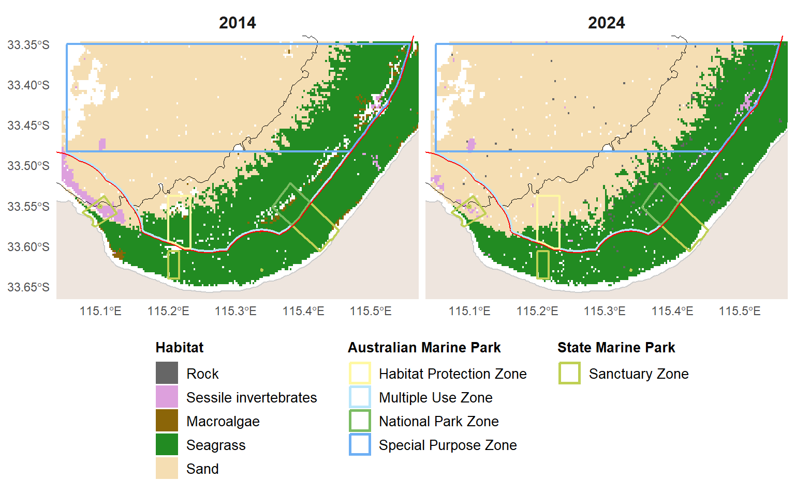
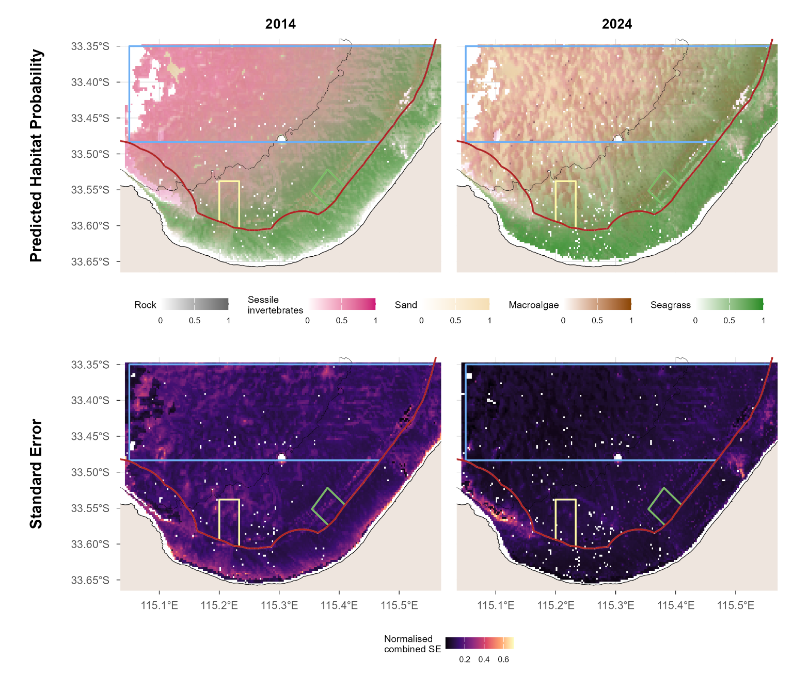
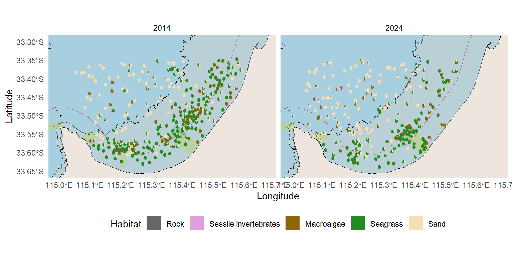
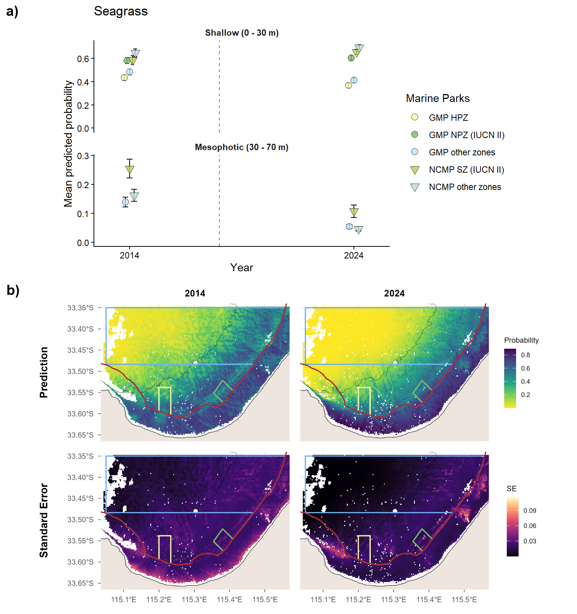
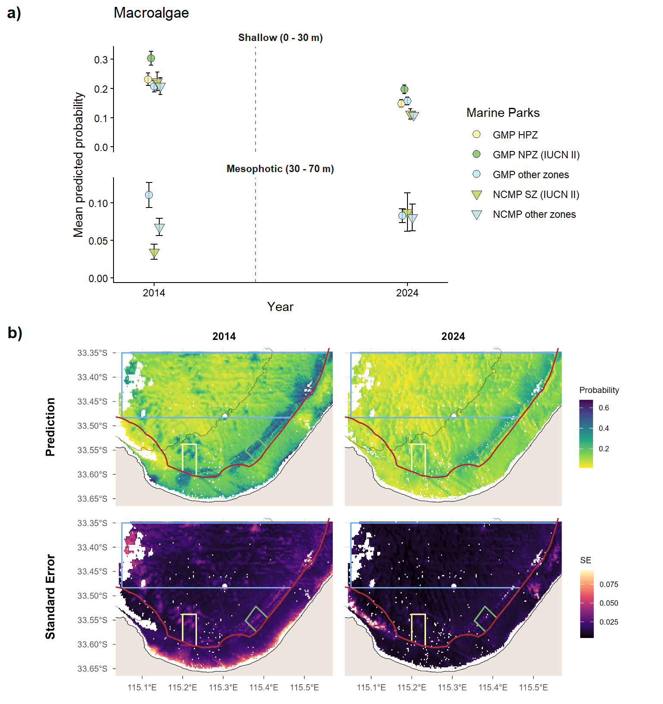
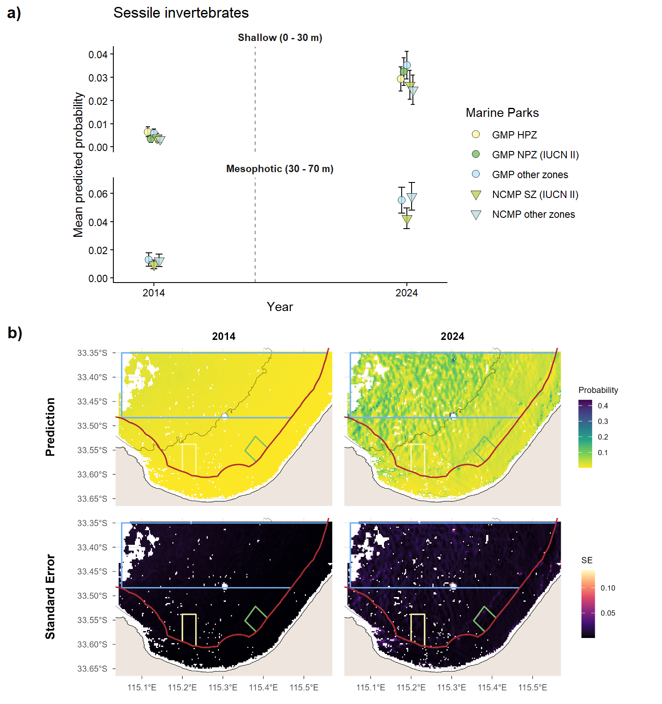
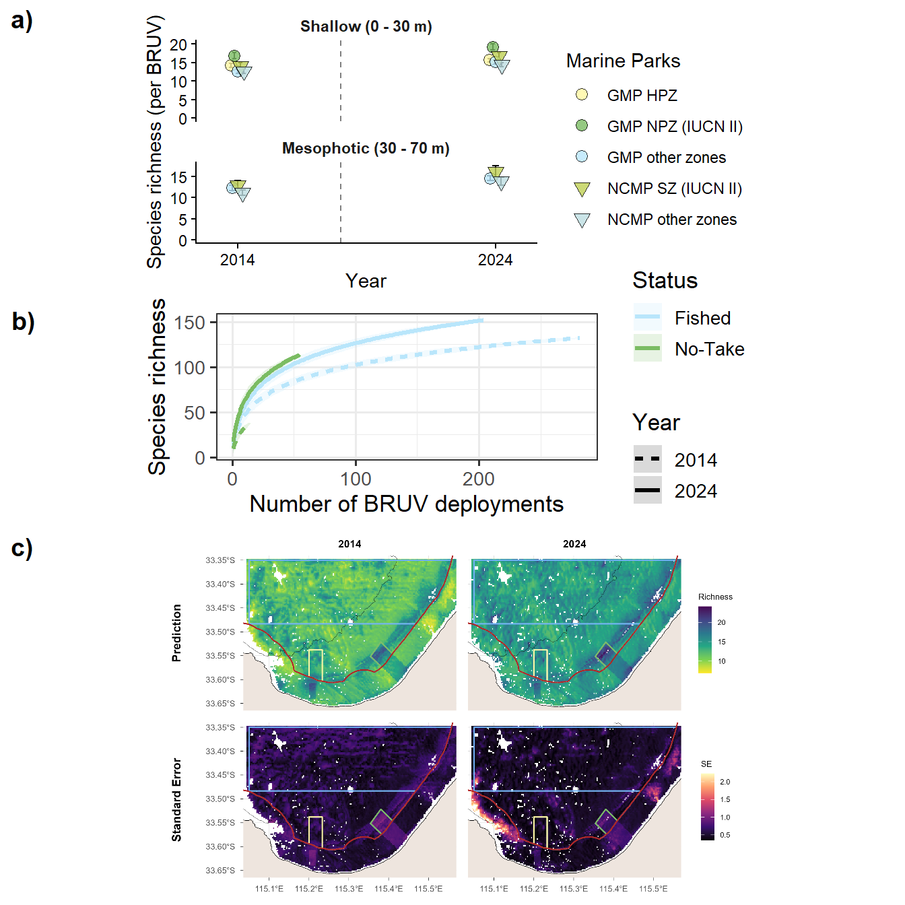
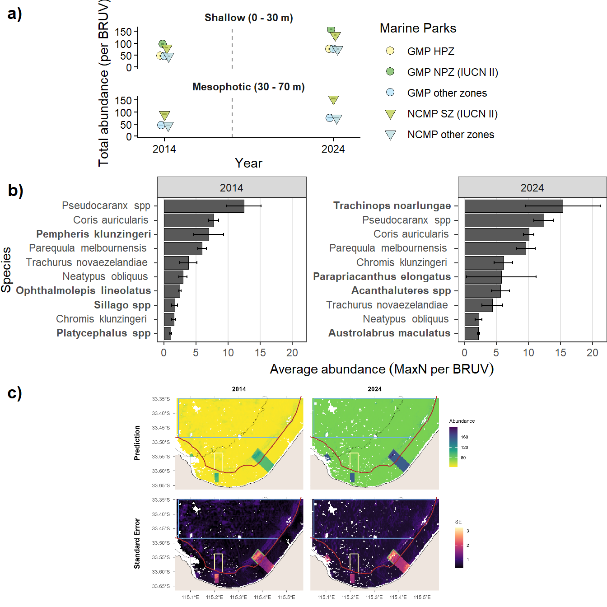
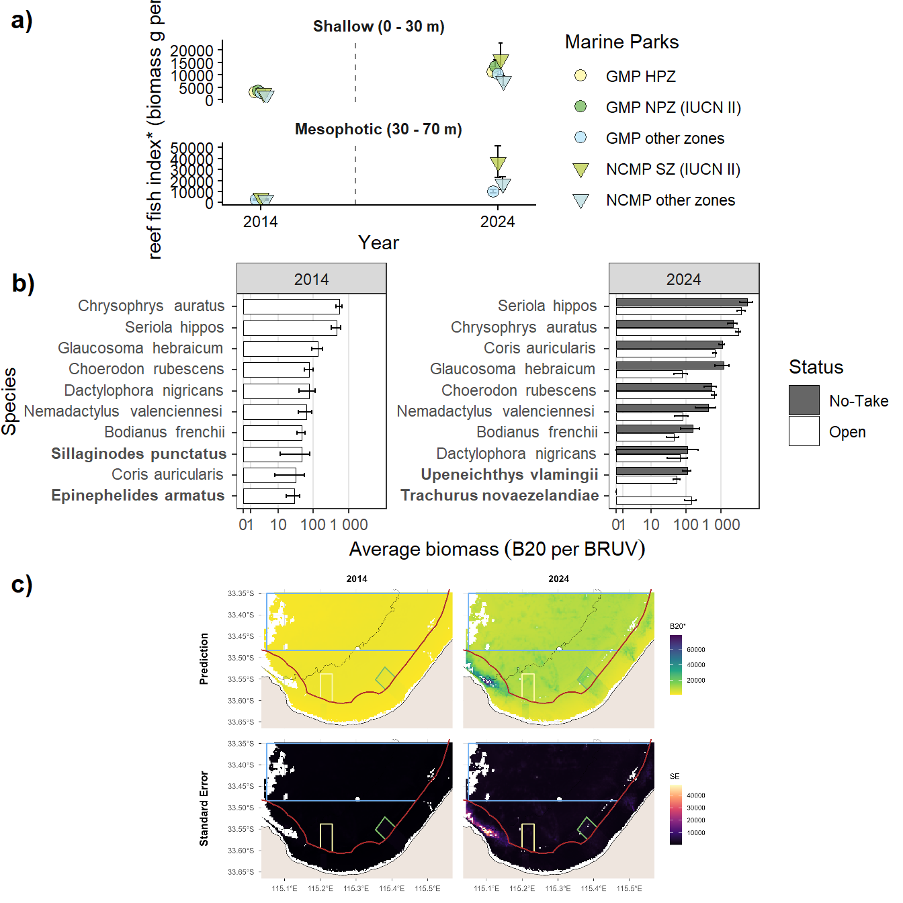
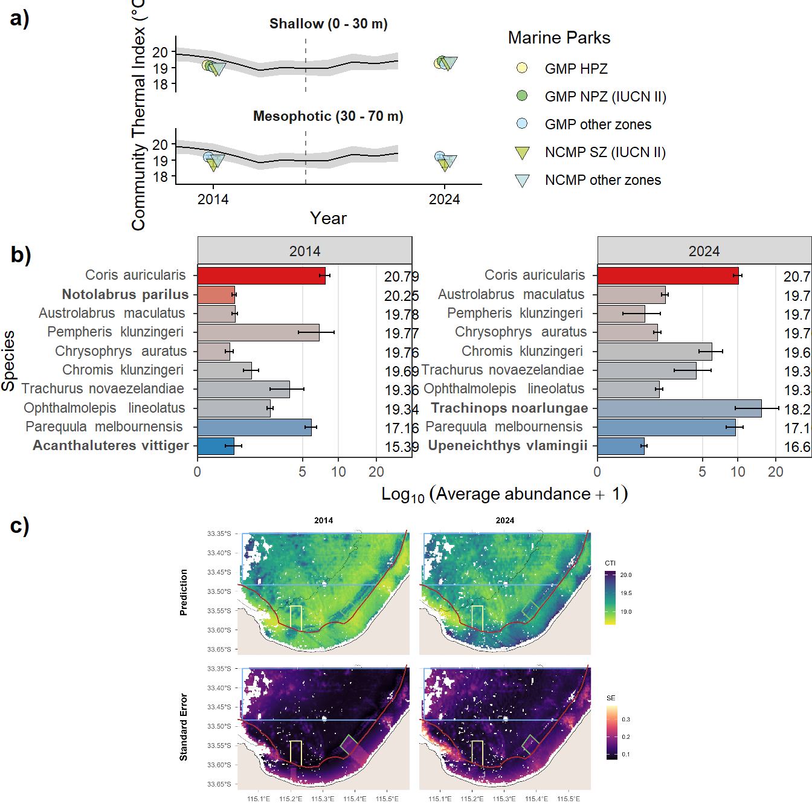

Appendix A - Geographe Marine Park Natural Values Report
South-west Marine Parks Network
Natural Values
Understanding of natural values
Benthic ecosystem extent
Dominant habitat types
Habitat distribution and probability

Observations

Benchmarks of benthic natural values

Benchmarks of benthic natural values

Benchmarks of benthic natural values

Benchmarks of demersal fish natural values
Species richness

Total abundance

Large Reef Fish Index*

Reef fish thermal index
